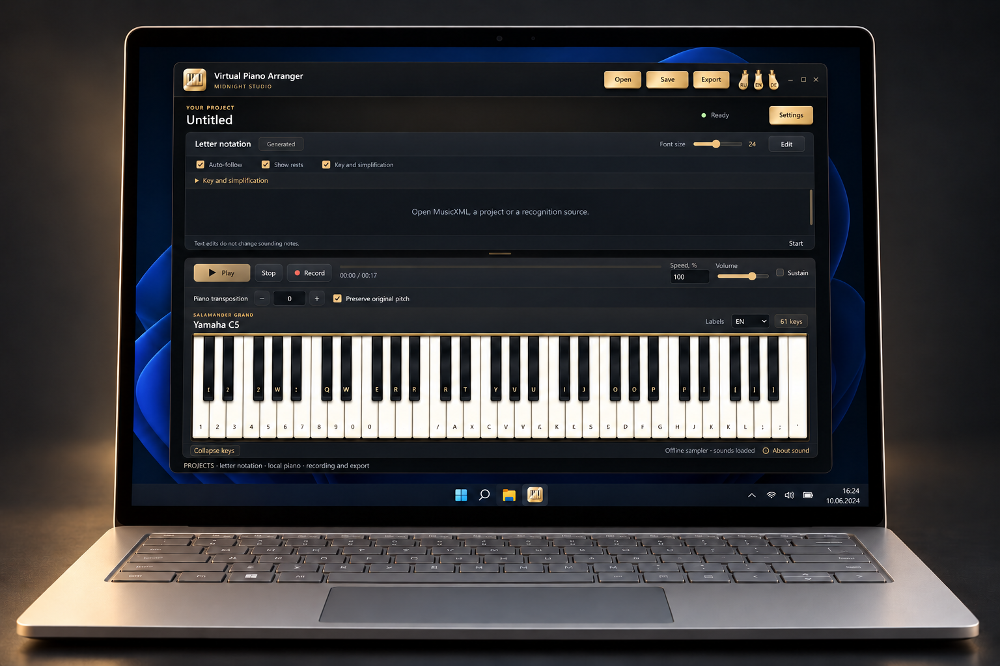

Windows · x64
Virtual Piano Arranger
Offline piano, letter notation and selected MIDI part import. Score recognition is experimental.
Preview · 0.1.0-preview.1Before you startWindows x64; Python/Qt and separate recognition runtime bundled. EXE unsigned.


How it works
- Play the piano
- Work with letter notation
- Arrange MIDI parts
First steps
Extract the entire portable folder, verify SHA-256, start VirtualPianoArranger.exe.